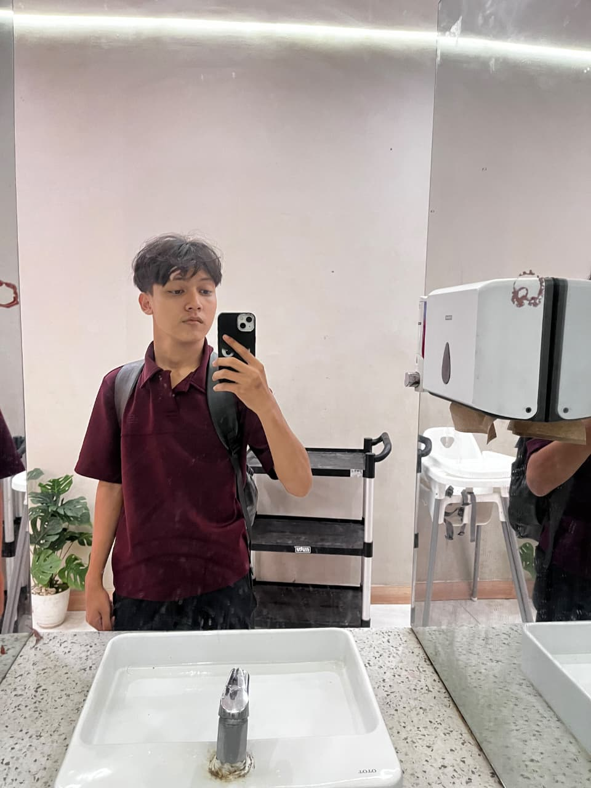

Proyek 1
Membuat website profil pribadi yang responsif dan estetis.
Lihat Detail →
Mahasiswa Teknik Informatika UMKT yang fokus mendalami Web Development & Jaringan Komputer.
Hai! Aku Zen, anak Teknik Informatika UMKT yang lagi seru-serunya belajar ngoding, bikin website, dan ngulik jaringan komputer. Kadang error, kadang jalan, yang penting terus belajar dan eksplorasi hal baru.
Di luar jam kuliah, hobiku main futsal. Habis lama berjam-jam di depan laptop, lari-larian di lapangan itu healing terbaik. Kalau kamu mau diskusi, kolaborasi proyek, atau sekadar ngajak mabar futsal, yuk ngobrol!
Beberapa karya dan latihan yang pernah saya buat.
Membuat website profil pribadi yang responsif dan estetis.
Lihat Detail →Pengembangan halaman web interaktif dengan tata letak modern.
Lihat Detail →Simulasi topologi jaringan komputer dasar menggunakan Cisco Packet Tracer.
Lihat Detail →